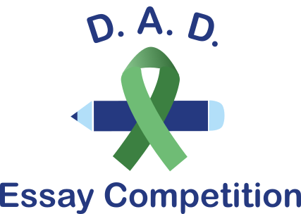

Alana Moore
Software Engineering Student
I am a senior software engineering student at ASU, located in the Pacific Northwest. I am interested in front-end development, human computer interaction, and AI.
I am passionate about many things such as music, art, and storytelling. My aspirations include working on creative software that can help others and impact their lives.
Featured Projects
ASU Senior Capstone: Web Application
Our team, a group of four senior Software Engineering students at ASU, is developing a cloud-based responsive website that allows schools from any district to sign-up for an essay competition. Deliverables include source code in a git repository, DevOps CICD build and release Pipelines for the application, and design and architecture documentation.
Team members take turns fulfilling Project Management roles including Scrum Master and Product Owner. We also share responsibilities regarding sprint progression and communicating with our client.
The motivation of this project is derived from a lack of mental health awareness in youth at a high school level, as well as the community of families who experience the tragedy of losing their children to their battles with depression. The client, Dads Against Depression (D.A.D.) is a 501(c)(3) non-profit organization that was organized by Natarajan Nellicherry. The mission of this organization is to help families and other adults that closely work with children learn to identify and provide support for youth struggling with mental health conditions.
View ProjectWork Experience
Undergraduate Technical Intern
Intel
Apr 2022 - Present
- Automating cloud solutions for system configuration updates.
- Contributing to REST API development.
- Promoting team inclusivity by facilitating weekly newsletters and surveys.
Software Engineering Intern
Starbucks
Aug 2021 - Dec 2021
- Collaborated on a digital store simulation that functionally represents a Starbucks store.
- Worked on simulation version control and made contributions to the existing repository.
- Contributed to software architecture and early development of new software modules.
- Translated domain business knowledge from my barista experience to the simulation software.
Game-Tech Intern
Apple
May 2021 - Aug 2021
- Worked on apple-made plugins for Unity to support game controller usage and iOS play store achievements.
- Contributed to deploying apple plugins to the unity game development engine.
- Learned and wrote code using unity-flavored scripts in C#.
- Debugged and wrote radar reports for back-end code.
Education
Arizona State University - Tempe, AZ
B.S. Software Engineering, Jan 2020 - May 2023
3.9 GPA
Clark College - Vancouver, WA
Associates in Computer Science, Jan 2019 - Jun 2019
4.0 GPA
Oregon State University - Corvallis, OR
B.S. Chemical Engineering, Sep 2016 - Jun 2017
3.9 GPA